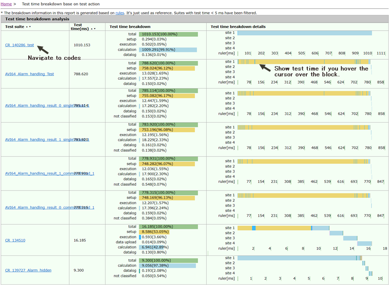

Test time breakdown based on test action
The Test Time Breakdown Analyzer can analyze the test time of each test suite in the testflow and classify the test time into 5 types.
To view the details of the analysis, click the test time breakdown base on test action in the Test time analysis reports table.
The test time of each test suite is broken down to the following five types:
- Setup time
Test time from the test suite start to the test execution and the test time from the test execution to the data upload.
- Execution time
Test time of running all SmarTest test execution functions, such as FUNCTIONAL_TEST, DIGITAL_CAPTURE_TEST, EXECUTE_GROUP, EXECUTE_TEST.
- Data upload time
Test time of running all SmarTest data upload functions, such as getVectors(), getWaveform(), getComplexWaveform().
- Calculation time
Test time from the data upload to the data log and the test time from the test execution to the data log.
- Data log time
Test time of running all SmarTest data log functions, such as TEST().
- Not classified time
Test time that cannot be classified into any of the above categories.
The detailed report is illustrated in the following figure:

Functional changes
- Introduced in SmarTest 7.3.2